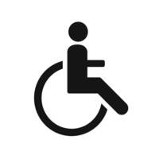
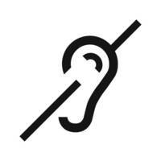
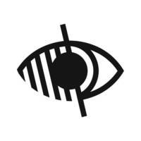
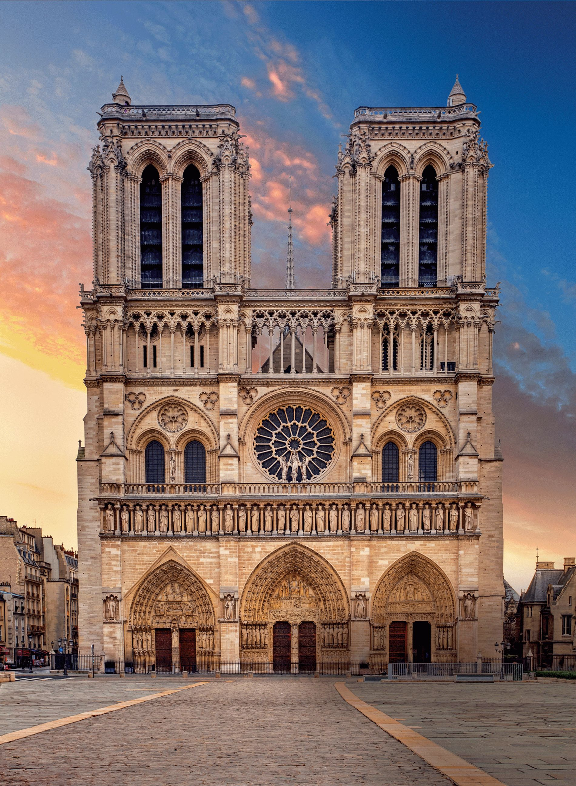

Visite las Orillas del Sena como nunca antes lo había hecho.
Monumentos
Notre Dame
Acceso :
Acceso para discapacitados :




La catedral de Notre-Dame de París es una obra maestra de la arquitectura gótica de la Edad Media. Se encuentra en la Isla de la Cité, en el corazón de París, y fue construido entre 1163 y 1345. La catedral es famosa por sus magníficas vidrieras, esculturas y su fachada adornada con estatuas. También es conocida por su campanario, el famoso "belfry", que ofrece una impresionante vista panorámica de la ciudad. La catedral de Notre Dame es un importante lugar de culto para los católicos, pero también un lugar de peregrinación para turistas de todo el mundo.
La Sainte-Chapelle es un edificio religioso situado en París, en la isla de la Cité. Se construyó en el siglo XIII para albergar las reliquias más sagradas del cristianismo, incluida la corona de espinas de Cristo. La Sainte-Chapelle es un notable ejemplo de arquitectura gótica, con sus altas bóvedas de crucería, paredes decoradas con coloridas vidrieras y estatuas de santos. Es conocida sobre todo por sus 15 vidrieras de colores que representan escenas de la Biblia. La Sainte-Chapelle es un lugar de culto católico, pero también está abierta al público para visitas.
La Torre Eiffel es uno de los monumentos más famosos y emblemáticos de París. Se construyó para la Exposición Universal de 1889 y tiene 324 metros de altura. La Torre Eiffel se ha convertido en el emblema de Francia y de París, atrayendo a millones de visitantes cada año. Está abierto al público y ofrece vistas panorámicas de la ciudad desde sus tres plataformas de observación. La Torre Eiffel es también un popular lugar de ocio, con restaurantes, bares y exposiciones. Se ilumina por la noche, ofreciendo un espectáculo impresionante a los visitantes. La Torre Eiffel es un símbolo emblemático de la arquitectura mundial.
El Palacio de Chaillot es un edificio situado en la plaza del Trocadero, en el distrito XVI de París. Se construyó para la Exposición Universal de 1937, en el emplazamiento del antiguo Palacio del Trocadero. Es un notable ejemplo de arquitectura Art Déco, con su elegante estilo y una terraza que ofrece impresionantes vistas panorámicas de la ciudad, incluida la Torre Eiffel. El Palais de Chaillot alberga varias instituciones culturales, como el Musée de l'Homme, que explora las humanidades y las culturas, y el Théâtre National de la Danse, que presenta espectáculos de danza contemporánea. También es lugar de celebración de grandes acontecimientos culturales y fiestas nacionales.


_(4).jpg)